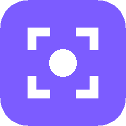

Capture context,
not screenshots.
The fastest way to explain something
to humans and AI.
Windows · free & open source

issue.capturepack ├─ replay.webm ├─ snapshot.png ├─ report.md ├─ annotations.json ├─ timeline.json └─ manifest.json
One file. Enough context for any developer — or any LLM.